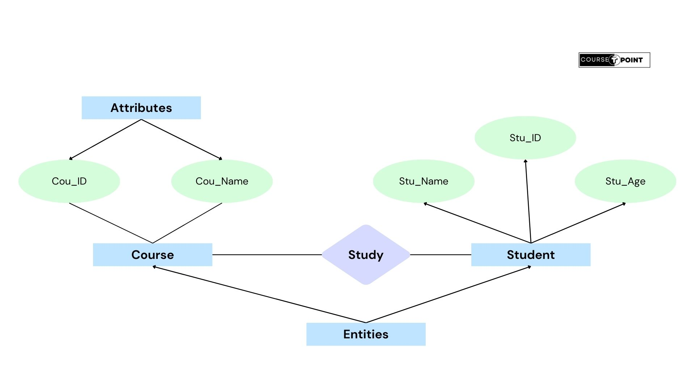

RDBMS & Types of Data Models
| Table Of Content |
|---|
Types of Data Models:
A data model is a conceptual representation of how data is structured and organized within a database of information system. It defines the relationships between different types of data and the rules governing those relationships. Essentially, it serves as a blueprint for designing and implementing a database system.
Data models provide a way to understand and communicate how data elements are related to each other and how they can be manipulated.
There are various types of Data Models-
- Relational Model:
Relational Model is widely used data model in modern DBMS. In this model, data is organised into tables with rows and columns, and relationships between tables are established using key's. It's based on set theory and predicate logic, offerung a flexible and efficient way to store and manage structured data.
We briefly discuss about Relational Data Model below-
- Hierarchical Model:
This model organises data in a tree-like structure, where each record has one parent record and multiple children records. It's useful for representing hierarchical relationships but can be complex to manage and inflexible.
- Network Model:
Similar to the hierarchical model, but with the ability for a record to have multiple parent and child records. This model allows for more complex relationships between data entities and is more flexible than the hierarchical model.
- E-R Model:
Conceptual modelling is very important phase in designing a successful database application. We present the modelling concepts of the Entity-Relationship (ER) model, which is a popular high-level conceptual data model. This model and its variations are frequently used for the conceptual design of database applications, and many database design tools employ its concepts. We describe the data-structuring concepts and constraints of the ER model and discuss their use in the design of conceptual schemas for the database applications. We also present the diagrammatic notation associated with the ER model, known as ER diagrams.
E-R diagrams are used during the database design phase to visualize the structure of the database and the relationships between entities. They serve as a blueprint for implementing the database schema in a relational database management system (RDBMS).
Entities & Attributes: The basic object that the E-R model represents is an entity, which is a thing in the real world with an independent existence. An entity may be an object with a physical existence (for example, a particular person, car, house, or employee) or it may be an object with a conceptual existence (for example, a company, a job, or a university course). Each entity has attributes-- the particular properties that describe it. For example, an Employee entity may be described by the employee's name, age, address, salary, and a job. A particular entity will have a value for each of its attributes. The attribute values that describe each entity become a major part of the data stored in the database.
Relational Database Model:
A Relational Model represents the database as a collection of relations. Informally, each relation resembles a table of values, to some extent, a flat file of records. In the formal relational model terminology, a row is called a tuple, a column header is called an attribute, and the table is called relation. The data type describing the types of values that can appear in each column is represented by a domain of possible values. We now define these terms--domain, tuple, attribute, and relation--more precisely.
Example- The relation Student with a different order or tuples.
| Name | Class | Address | Age |
|---|---|---|---|
| Anupam | BCA | Ganesh Colony Chandausi | 21 |
| Ashneer | BBA | Pragati Vihar | 22 |
| Aditya | MCA | NULL | 21 |
| Rohit | BCA | Ganesh Colony | NULL |
Domain, Attributes, and Relations:
Domains:
A Domain D is a set of atomic values. By atomic we mean that each value in the domain is invisible as far as the relational model is concerned. A common method os specifying a domain is to specify a data type from which the data values forming the domain are drawn. It is also useful to specify a name for the domain, to help in interpreting its values. Some examples of domains follows:
- Names: The set of character strings that represent names of persons.
- Employee_ages. Possible ages of employees of a company; each must be a value between 15 and 80.
Attributes:
Attributes are the characteristics or properties of entities within a database table. Each attrubute represents a specific piece of information or data about the entities being modeled.
For example, consider a table representing employees in a company. Each row in the table represents a single employee, and the columns represent different attributes of those employees, such as "EmployeeID", "Name", "Department", "Salary", and "Hiredate".
Attributes are important because they define the structure and properties of the data within a database. They provide a way to organize and store information in a meaningful and structured manner, allowing for efficient storage, retrieval, and manipulation of data.
Relations:
A relation is a table that stores data in rows and columns, with each row representing a record or tuple and each column represents an attribute.
A relation is generally represented as a two-dimentional grid, where each row represents a unique record and each column represents a specific attribute. The intersection of a row and a column contains the value of the attribute for that particular record.
Keys:
Primary Key:
A primary key is a column or a set of columns that uniquely identifies each record in a table. It serves as a unique identifier for each row and ensures that there are no duplicate rows in the table.
Characteristics of primary key-
Each value in the primary key column(s) must be unique within the table. This ensures that each row in the table can be uniquely identified.
A primary key column cannot contain NULL values. Each row must have a value in the primary key column(s).
A primary key can consist of a single column or multiple columns. When it consists of multiple columns, it's called a composite key.
Primary key are often used in defining relationships between tables (foreign keys).
Composite key:
A Composite key is the key that consists of multiple columns in a database model, used to uniquely identify each record. Unlike a single-column primary key, a composite key uses two or more columns to uniquely identify a row within a table. Each column in a composite key contributes to the uniqueness of the key when combined with the values in other columns.
Foreign key:
A Foreign key is a column or a set of columns in a relational database table that establishes a relationship with another table's primary key or a unique key. It serves to maintain referential integrity between the data in related tables.
Characteristics of Foreign key:
Foreign keys enforce refrential integrity, which means they help maintain consistency between related tables.
A foreign key column may allow NULL values, making the relationship optional, or it may be defined as NOT NULL, enforcing that every row must have a corresponding value in the refrenced table.
Foreign keys are often indexed to optimize query performance, especially when querying or joining tables based on the foreign key columns.
Relational Model Constraints:
In Relational Model there are various types of constaints that are commonly used to maintain the atomicity, consistency, integrity and durablity of a database.
Domain Constraints:
Domain Constraints specify that within each tuple, the value of each attribute A must be an atomic value from the domain dom(A). The data types associated with domains typically include standard numeric data types for integers (such as int, short int, long int) and real numbers (float and double-precision float). Characters, Booleans, fixed-length strings, and variable-length strings are also available, as are date, time, time-stamp, and money, or other special data types.
Key Constraints:
A relation is defined as a set of tuples. By definition, all elements of a set are distinct; hence, all tuples in a relation must also be distinct. This means that no two tuples can have the same combination of values for all attributes. Usually, there are other subsets of attributes of a relation schema R with the properly that no two tuples in any relation state r of R should have the same combination of values for these attributes.
For a primary key, it ensures that each row in a table is uniquely identified by a primary key. It prevents duplicate or null-values in the primary key column(s), and it uniquely identifies each record in the table.
For a unique key, it ensures that the values in one or more columns of a table are unique across all rows in the table. Unique key constraints allows null values, but each non-null value must be unique.
For a foreign key, it establish a relationship between two tables by linking a column or set of columns in one table to the primary key column(s) in another table. It enforces referential integrity, ensuring that values in the foreign key column(s) must exist in the referenced table's primary key column(s).
Another constraint on attributes specifies whether NULL values are or are not permitted. For Example, if every STUDENT tuple must have a valid, non-NULL value for the Name attribute, then Name of STUDENT is constrained to be NOT NULL.
Relational Algebra:
The basic set of operations for the relational model is the Relational Algebra. These operations enable a user to specify basic retrieval requests. The result of a retrieval is a new relation, which may have been formed from one or more relations. The algebra operations thus produce new relations, which can be further manipulated using operations of the same algebra. A sequence of relational algebra operations form a relational algebra expression, whose result will also be a relation that represents the reult of a database
The relational algebra is very important for several reasons. First, it provides a formal foundation for relational model operations. Second, and perhaps more important, it is used as a basis for implementing and optimizing queries in relational database management systems (RDBMS). Third, some of its concepts are incorporated into the SQL standard query language for RDBMS. Although no commercial RDBMS in use today provides an interface for relational algebra queries, the core operations.
There are different types of operations used in Relational Algebra:
Relational Calculus:
Relational Calculus provides a higher-level declarative notation for specifying relational queries. A relational calculus expression creates a new relation, which is specified in terms of variables that range over rows of the stored database relations or over columns of the stored relation. In a calculus expression, there is no order of operations to specify how to retrieve the query result- a calculas expression specifies only what information the result should contain. This is the main distinguishing feature between relational algebra and relational calcuas.
The relational calculas is important because it has a firm basis in mathematical logic and because the standard query language(SQL) for RDBMSs has some of its foundations in the tuple relational calculas. There are two variations of Relational Calculus-
- Tuple Relational Calculus:
- Domain Relational Calculus:
We introduce other formal query language for the relational model called Relational Calculus. In relational calculus, we write one declarative expression to specify a retrieval requests; hence, there is no description of how to evaluate a query. A calculus expression specifies what is to be retrieved rather than how to retrieve it. Therefore, the relational calculus is considered to be a non-procedural language. This differs from relational algebra relational algebra, where we must write a sequence of operations to specify a retrieval requests; hence, it can be considered as a procedural way of starting a query.
A general expression of the tuple relational calculus is of the form-
{}
There is another type of relational calculus called the domain relational calcus, or simply, domain calculus. While SQL a language based on tuple relational calculus, was being developed by IBM Research at San Jose, California, another language called QBE (Query-By-Example), which is related to domain calculus, was being developed almost concurrently at IBM T.J. Watson Research Center at Yorktown Heights, New York. The formal specification of the domain calculus was proposed after the development of the QBE system.
Domain calculus differs from tuple calculus in the type of variables used in formulas: Rather than having variables range over tuples, the variables range over single values from domains of attributes. To form a relation of degree n for a query result, we must have n of these domains variables-one for each attribute. An expression of the domain calculus is of the form-
Advantages & Disadvantages of Data Models:
Advantages of Data Models:
- Data models offer a structured way to represent data. They define how data is organized and stored in the database.
- Data models helps to ensure data integrity. They enforce rules and constraints to prevent inconsistencies and errors in the database.
- Data models provide a level of abstraction.
- Data models helps to ensures that the data is uniform and accurate, regardless of how it is accessed or manipulated.
- Data models optimize the retrieval and manipulation of data by providing efficient data access methods.
- Data models enables us to efficient data storage and retrieval even as the size of the data increases.
- Data models provides security features such as access control mechanisms and encryption techniques to protect sensitive data from unauthorized access or manipulation.
Disadvantages of Data Models:
- Managing and understanding these models can be challenging, requiring specialized knowledge and skills.
- Data models may need to be updated or modified to accomodate new requirements or changes in the underlying data.
- Some data models may struggle to scale efficiently as data volumes increase.
- In certain data models, redundancy can be a concern, leading to wasted storage space and increased complexity.
- Understanding and working with data models effectively requires specialized knowledge of database concepts, modelling techniques, and sometimes specific modelling languages.